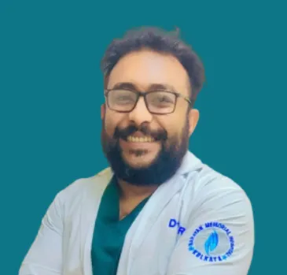

MBBS, MS - Orthopaedics. Expert Orthopedic Surgeon dedicated to restoring your mobility and enhancing your quality of life.

Orthopedic Surgeon
Years Experience
Happy Patients
Expert Clinics
Verified Profile
Dr. Gourab Chandra is a highly skilled Orthopedic Surgeon based in Bhawanipore, Kolkata, with over 13 years of extensive experience in the field. He specializes in a wide range of orthopedic treatments and surgeries, helping patients regain their strength and movement.
He completed his MBBS from BN Mandal University in 2013 and earned his MS in Orthopaedics from the same university in 2017. His commitment to patient care and surgical excellence makes him one of the most trusted names in Kolkata.
He is currently associated with several renowned hospitals, including:
Consultant Orthopaedic Surgeon at BP Poddar Hospital
Chief Orthopaedic Surgeon in Kasturi Das Memorial Hospital
Consultant Orthopaedic Surgeon at ESI Hospital Budge Budge
With expertise in trauma care, fracture management, joint disorders, and orthopedic surgeries, Dr. Gourab Chandra continues to provide dedicated and compassionate treatment to patients across Kolkata and surrounding regions.
Expert surgical interventions for bone fractures, joint replacements, and complex trauma cases.
Advanced procedures to repair damaged joints and restore smooth, pain-free movement.
Specialized care for athletes and active individuals dealing with ligament tears and muscle injuries.
13, Lala Lajpath Rai Sarani, Elgin Centre, 2nd Floor, Landmark: Tee Cee Curls - Elgin, Kolkata
Timings:
Tegharia, Kolkata
Practice Center:
Equipped with state-of-the-art medical technology for advanced orthopedic procedures.
View DetailsR.K.Seva Pratisthan, Kolkata
Services:
General Orthopedics, Trauma care, and Consultation services.
View Details